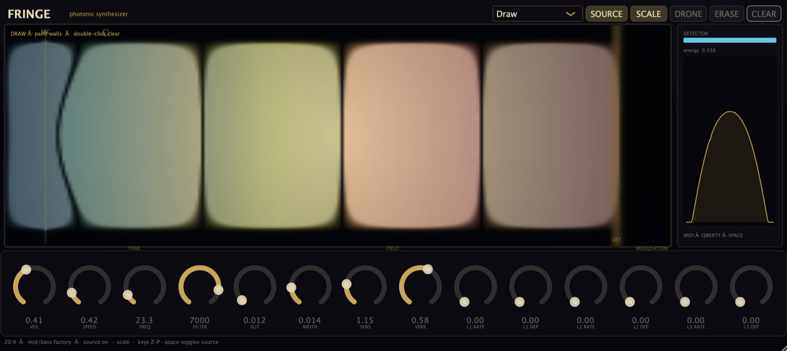
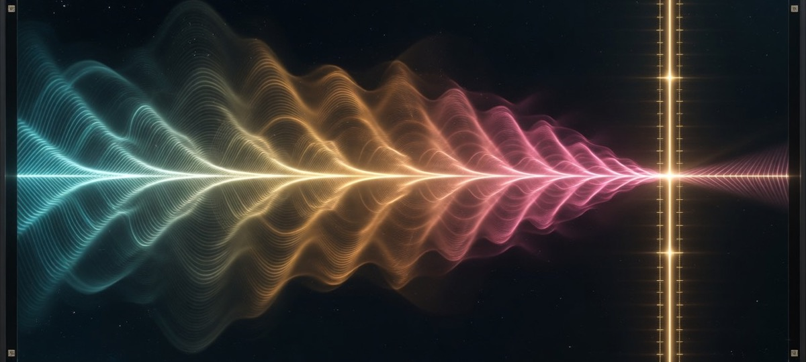

FDTD wave field
Real-time finite-difference wave simulation. Slits, lenses, Mach–Zehnder, freehand barriers — geometry shapes the sound.
Photonic synthesizer · v1.1
Fringe turns a real-time wave-optics field into a musical instrument. Diffraction, interference, and freehand barriers become timbre — detectors become voices.
Interface
Live supersampled wave field, detector scope, drag handles, mid/bass factory tone.


Born as a web instrument at edwinrosero.com/fringe, Fringe now runs natively in Renoise, Reaper, Ableton, Bitwig, and more — as VST3, AU, or CLAP.
Engine
Real-time finite-difference wave simulation. Slits, lenses, Mach–Zehnder, freehand barriers — geometry shapes the sound.
Three vertical probes (L/C/R) scan the field into stereo voices with saturation, resonant peaks, FDN reverb, and sub.
Factory mid/bass tuning, pentatonic scale mode, warm filter ceiling — less screech, more body.
20:9 cinematic UI. Supersampled field graphics. Drag probes. CINE age palette or SCI lab map.
MIDI pulse/hold, mod wheel → freq, CC74 → filter, QWERTY pentatonic, spacebar wavefronts.
Three LFOs with depth/rate and host-automatable targets for freq, speed, slit, sens, filter, reverb.
v1.1.0
Free · open source (GPL-3.0) · GitHub Releases
All releases: github.com/walkthroughwonder/fringe-plugin/releases
Setup
Unzip, run Install-Plugins.command, or copy:
VST3 → ~/Library/Audio/Plug-Ins/VST3/AU → ~/Library/Audio/Plug-Ins/Components/CLAP → ~/Library/Audio/Plug-Ins/CLAP/If Gatekeeper blocks: System Settings → Privacy & Security → Open Anyway, or xattr -cr the bundle.
Copy Fringe.vst3 to C:\Program Files\Common Files\VST3\. Place CLAP in your host’s CLAP path. Rescan plugins.
Copy VST3 to ~/.vst3/, CLAP to ~/.clap/. Rescan your host.
Preferences → Plug-ins → enable VST3 → Rescan. Instrument slot → Plugin → Edwin Rosero: Fringe. Click the editor for keyboard focus.
Quickstart
| Input | Action |
|---|---|
| SOURCE | Continuous field on/off |
| Space | Fire a wavefront pulse |
| Z–P | QWERTY pentatonic rows |
| MIDI notes | Pulse (default) or hold mode |
| Drag SRC / DET | Move source plane & detector |
| Double Slit | Classic interference preset |
| CINE / SCI | Cinematic vs scientific field view |
| Draw + paint | Freehand walls (Width = brush) |
Open source
Source is on GitHub under GPL-3.0 (JUCE under GPL). Commercial closed-source shipping needs a commercial JUCE license.
cmake -B build -DCMAKE_BUILD_TYPE=Release \
-DCMAKE_OSX_ARCHITECTURES="arm64;x86_64" \
-DFRINGE_BUILD_CLAP=ON
cmake --build build --config Release -j
./scripts/package_release.shNotes